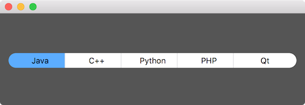
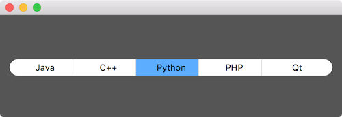

如下的按钮组相信大家都看到过，最左和最右的按钮是圆角的，中间的按钮是矩形的，同时只能有一个按钮是选中状态：


按钮的样式使用 QSS 实现，使用 setProperty 设置按钮的 class 属性为 GroupButton，就可以利用类选择器 .GroupButton 选择按钮组的按钮，避免它们的样式影响到普通按钮。为了单独设置最左和最右按钮的样式，使用 setProperty 为其设置一个属性 position，最左按钮的为 first，最右按钮的为 last，然后就能使用属性选择器 .GroupButton[position="first"] 和 .GroupButton[position="last"] 选择它们了。
按钮 QPushButton 默认是不可选的，调用 setCheckable(true) 让其可选。同时只能选中一个按钮，最直接的方法就是把按钮放到一个 QList 里，点击按钮的时候在它的 clicked 的槽函数中调用它的 setChecked(true) 设置为选中状态，遍历 QList 调用其它按钮的 setChecked(false) 设置为非选中状态。还有一种方法是把按钮加入到 QButtonGroup，设置 QButtonGroup 的 exclusive 为 true 就可以了，简单了很多，下面也使用这种方法。
1 |
|
为了便于编辑和管理 QSS，没有在 C++ 代码里写 QSS，而是把 QSS 保存到文件 style.qss 中 (内容在文章的最后面)，第 14 行到 16 行从文件 style.qss 里加载 QSS 到应用中，这样做还有一个好处是修改 QSS 后不需要重新编译程序，只需要重新启动程序就能看到修改后的效果。如果写到源码里，修改 QSS 后就必须要重新编译程序。
第 25 行给按钮增加属性 class，值为 GroupButton，就是为了使用类选择器 .GroupButton 选择按钮组里的按钮。第 26 行设置按钮为可选的，第 27 行把按钮加入到按钮组，第 30 行设置按钮组里的按钮为单选按钮。第 32 行设置第一个按钮的 position 属性为 fist，第 33 行设置最后一个按钮的 position 属性为 last，以便在 QSS 中能使用属性选择器选择它们。第 36 行后对界面进行布局。
样式保存到文件 style.qss 里，内容如下：
1 | .GroupButton { |